Research Team
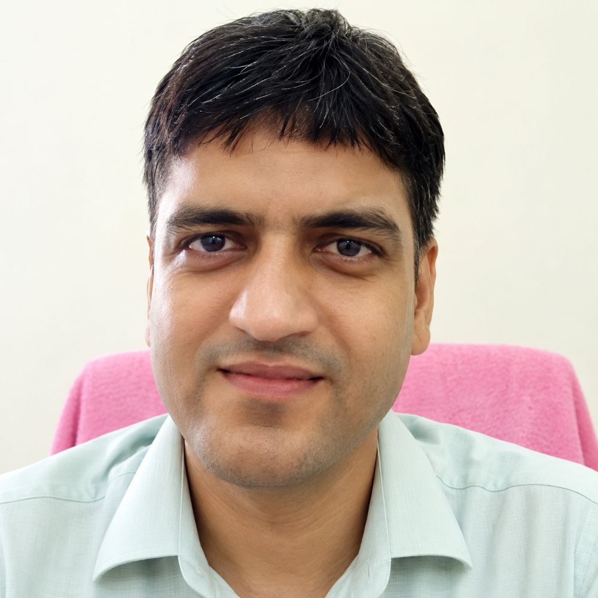
Dinesh Soni
Ph.D. Scholar
Cloud Computing
I am currently pursuing a Ph.D. in Computer Science and Engineering at the Indian Institute of Technology Roorkee as a QIP Research Scholar under the AICTE QIP Scheme. I have more than 13 years of teaching and research experience and currently serve as an Assistant Professor in the Department of Computer Science and Engineering at Government Engineering College, Kota (RTU, Rajasthan). I completed my Master's in Computer Technology from IIT Delhi. My research interests include Cloud Computing, Internet of Things (IoT), and Machine Learning.
Status: Ongoing
Email: dinesh_s@cs.iitr.ac.in
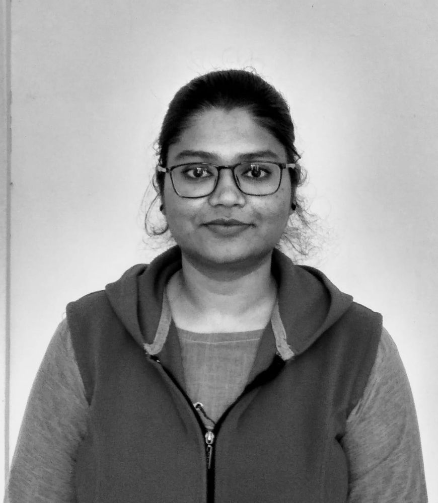
Nisha Singh Chauhan
Ph.D. Scholar
Intelligent Transportation System (ITS)
I was a Ph.D. candidate in the Department of Computer Science and Engineering at the Indian Institute of Technology Roorkee (IITR), India. My research interests include Intelligent Transportation Systems (ITS) and Machine Learning (ML). I completed my M.Tech. in Computer Science and Engineering from IIT Patna. Currently, I am working on traffic flow prediction using hybrid models.
Status: Completed
Email: nisha_sc@cs.iitr.ac.in
Anuj Sachan
Ph.D. Scholar
Intelligent Transportation System (ITS)
I was a Ph.D. candidate in the Department of Computer Science and Engineering at the Indian Institute of Technology Roorkee, India. My research interests include Intelligent Transportation Systems (ITS), Software-Defined Networking (SDN), and Deep Reinforcement Learning (DRL). I completed my M.Tech. in Information Security from IIITM Gwalior. Currently, I am working on traffic signal congestion management using intelligent control techniques.
Status: Completed
Email: anuj_s@cs.iitr.ac.in
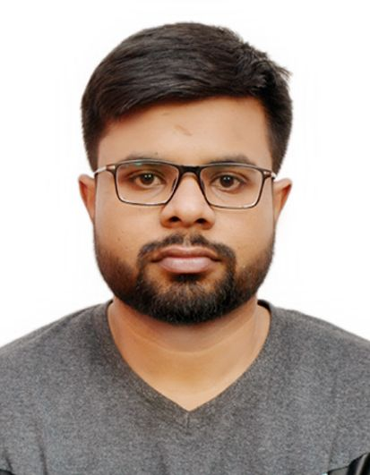
Shikhar Singh Lodhi
Ph.D. Scholar
Autonomous Vehicular Communication
I was a Ph.D. candidate in the Department of Computer Science and Engineering at the Indian Institute of Technology Roorkee (IITR), India. My research interests include Autonomous Vehicle Systems, Deep Learning (DL), and Deep Reinforcement Learning (DRL). I completed my M.Tech. in Mathematics and Computing from IIT Patna and my B.Tech. in Computer Science and Engineering from NIT Arunachal Pradesh. Currently, I am working on autonomous vehicle driving manoeuvres.
Status: Completed
Email: shikhar_l@cs.iitr.ac.in
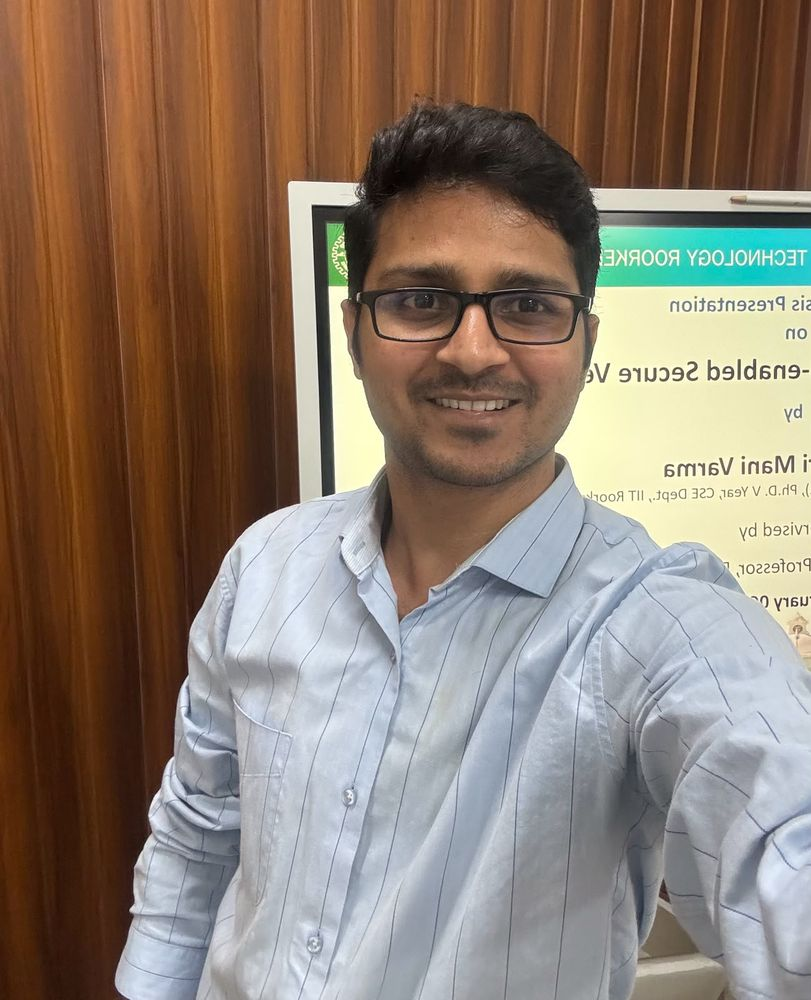
I. Mani Varma
Ph.D. Scholar
Security of Vehicular Networks
I was a Ph.D. student in the Department of Computer Science and Engineering at the Indian Institute of Technology Roorkee (IITR), India. My research interests include Networks, Information Security, Autonomous Vehicular Communications, and Software-Defined Networking (SDN). I completed my M.Tech. in Information Security from the University of Hyderabad.
Status: Completed
Email: im_varma@cs.iitr.ac.in
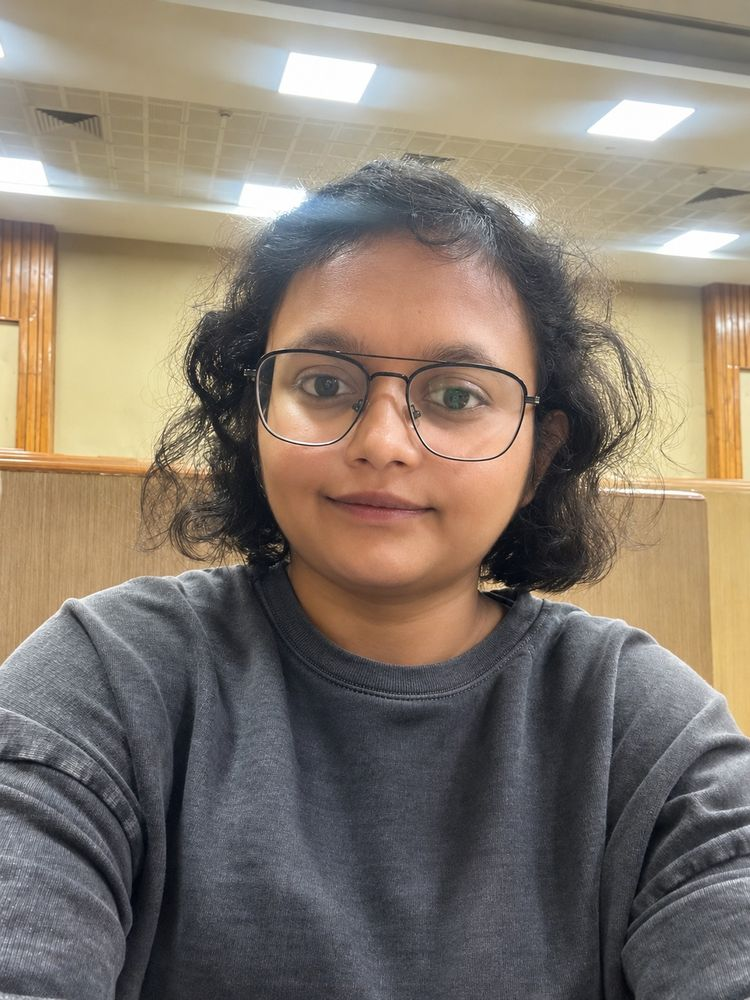
Vibha Bharilya
Ph.D. Scholar | PMRF Scholar
Autonomous Driving Systems & Machine Learnning
I am a Ph.D. scholar in the *Department of Computer Science and Engineering at the Indian Institute of Technology Roorkee (IIT Roorkee), India. My research interests include **Autonomous Vehicle Systems, Trajectory Prediction, Multi-Agent Motion Forecasting, Deep Learning, and Robust Autonomous Driving. I received my **M.Tech. degree in Computer Science and Technology from Jawaharlal Nehru University, New Delhi. My **M.Sc. degree in Mathematics and Scientific Computing from the National Institute of Technology, Warangal, in 2019
Status: Ongoing
Email: [vibha_b@cs.iitr.ac.in](mailto:vibha_b@cs.iitr.ac.in)

Shikhar Vashistha
Ph.D. Scholar
Autonomous Vehicles
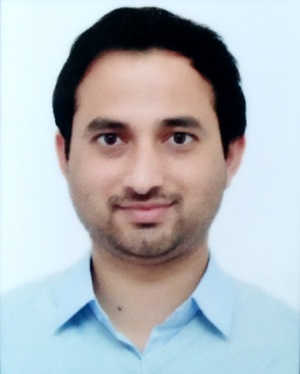
Vijay Prakash Bijwan
Ph.D. Scholar (External)
Software-Defined Networking (SDN)
I am currently pursuing a Ph.D. in Computer Science and Engineering at IIT Roorkee as an In-Service External Research Scholar. I am working as an Assistant Professor at Hemvati Nandan Bahuguna Garhwal University. My research interests include Software-Defined Networking (SDN) and Machine Learning applications in Computer Networking.
Status: Ongoing
Email: vijay_pb@cs.iitr.ac.in
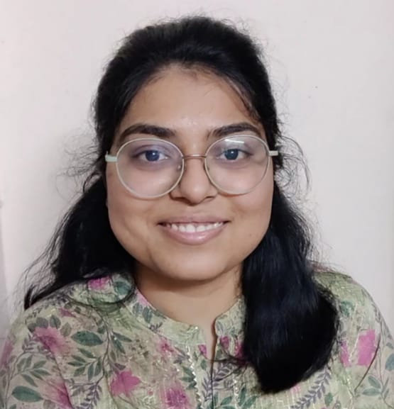
Sanskriti
Ph.D. Scholar
Computer Vision & Autonomous Driving
I am a Ph.D. candidate in the Department of Computer Science and Engineering at the Indian Institute of Technology Roorkee, India. My research interests include autonomous driving, cooperative perception, multi-modal sensor fusion, and diffusion models for 3D object detection under adverse weather. I completed my B.Tech in Data Science and Artificial Intelligence from IIIT Naya Raipur and am currently working on weather-robust perception for intelligent transportation systems.
Status: Ongoing
sanskriti_c@cs.iitr.ac.in —
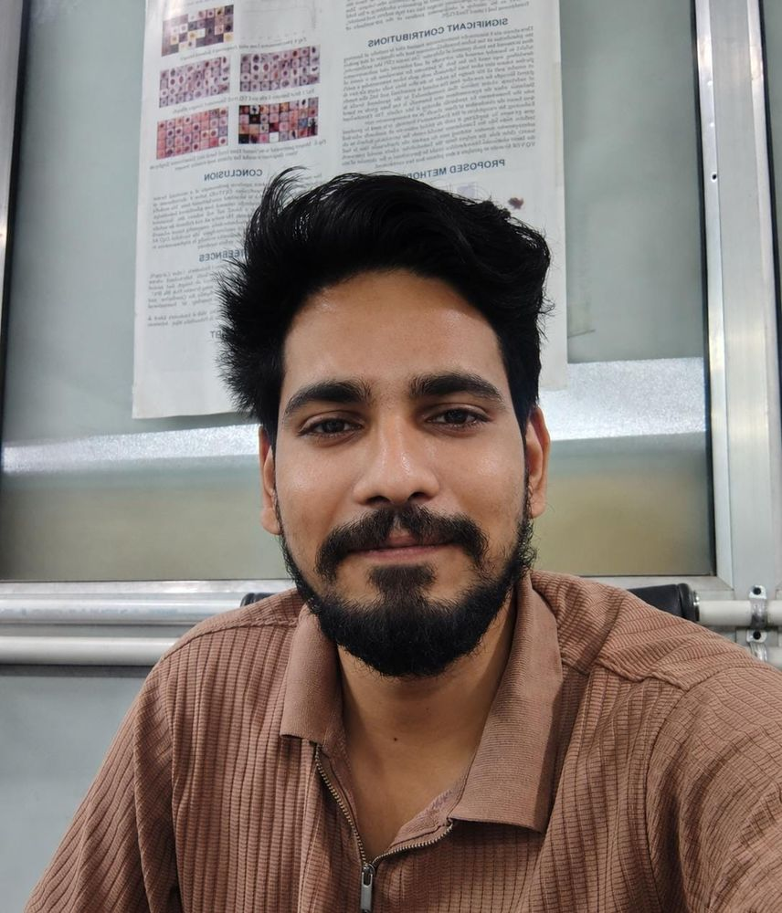
Lalit Kumar
Ph.D. Scholar
Computer Vision & Autonomous Driving
I am a Ph.D. candidate in the Department of Computer Science and Engineering at the Indian Institute of Technology Roorkee (IITR), India. My research interests include Computer Vision, Autonomous Driving, Deep Learning (DL), and Deep Reinforcement Learning (DRL). I completed my B.Tech. and M.Tech. in Computer Science and Engineering from the National Institute of Technology Hamirpur. Currently, I am working on bridging the Sim2Real gap for autonomous driving systems.
Status: Ongoing
Email: lalit_k@cs.iitr.ac.in
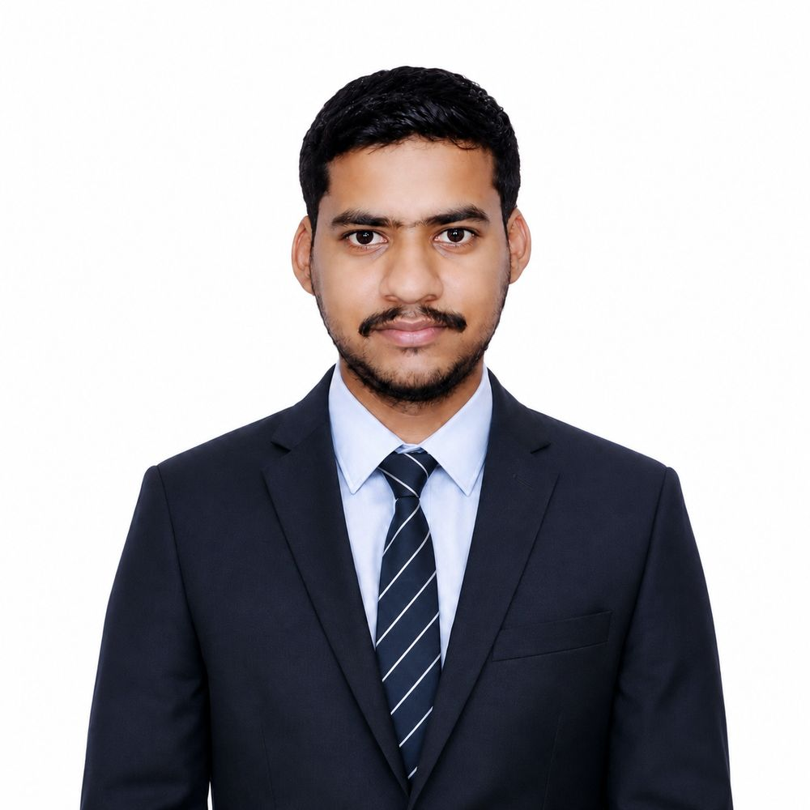
Atul Sharma
Ph.D. Scholar
Cybersecurity for Connected & Autonomous Vehicles
I am a Ph.D. candidate in the Department of Computer Science and Engineering at IIT Roorkee. My research interests include Cybersecurity, Authentication Protocols, and Secure Software Update Mechanisms for Connected and Autonomous Vehicles (CAVs). I completed my M.Tech. in Computer Science and Engineering from NIT Hamirpur. Currently, I am working on secure communication frameworks for autonomous vehicle ecosystems.
Status: Ongoing
Email: atul_s@cs.iitr.ac.in
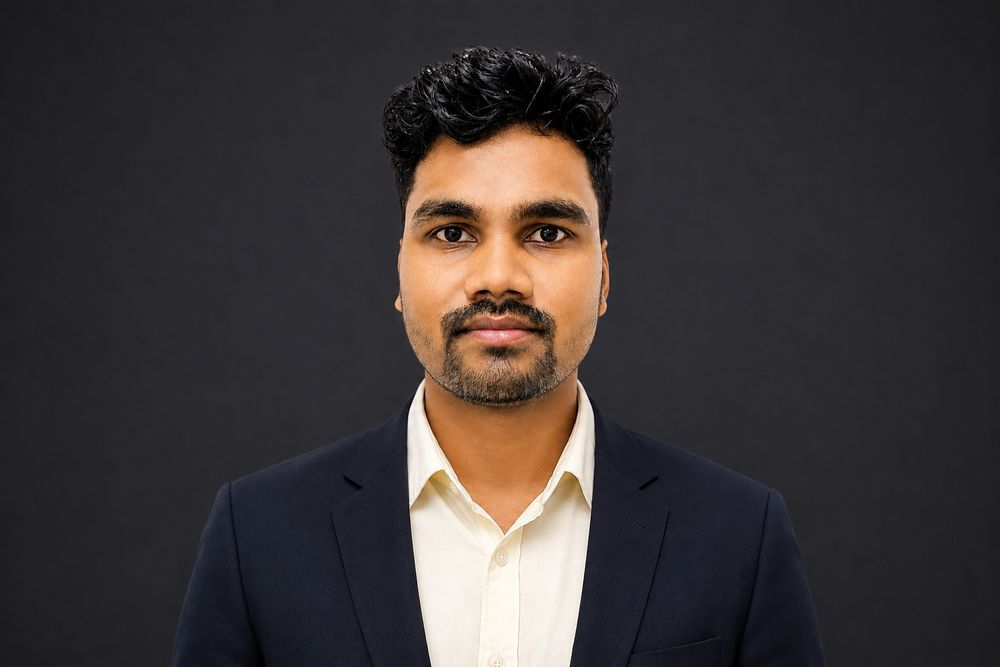
Gyaneshwar Prasad
Ph.D. Scholar
Post-Quantum Cryptography & Autonomous Vehicles
I am a Ph.D. candidate in the Department of Computer Science and Engineering at IIT Roorkee. My research interests include Post-Quantum Cryptography (PQC), Zero-Trust Architecture (ZTA), and Autonomous Vehicles. I completed my M.Tech. in Computer Science and Engineering from Jawaharlal Nehru University (JNU), New Delhi. Currently, I am working on post-quantum security for autonomous vehicles.
Status: Ongoing
Email: gyaneshwar_pk@cs.iitr.ac.in
Sumit Sharma
Ph.D. Scholar
Post-Quantum Cryptography & Autonomous Vehicles
I am a Ph.D. student in the Department of Computer Science and Engineering at IIT Roorkee. My research interests include Post-Quantum Cryptography, Networks, Information Security, and Autonomous Vehicular Communications. I completed my M.Tech. in Computer Science and Engineering from NIT Jamshedpur.
Status: Ongoing
Email: sumit_s@cs.iitr.ac.in
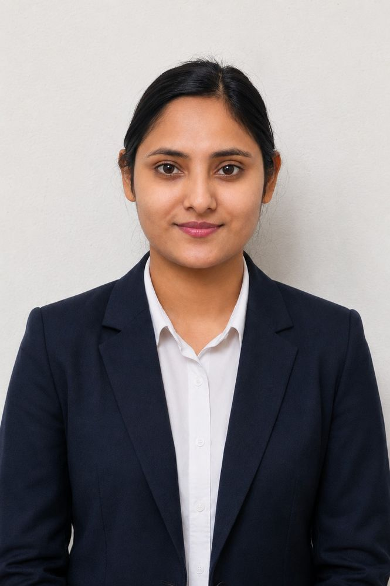
Aanchal Bhandari
Ph.D. Scholar
Post-Quantum Cryptography & UAV Security
I am a Ph.D. candidate in the Department of Computer Science and Engineering at the Indian Institute of Technology Roorkee (IITR), India. My research interests include Post-Quantum Cryptography (PQC), Network Security, Autonomous Vehicle Systems, and Deep Learning (DL). I completed my M.Tech. in Computer Science and Engineering from NIT Hamirpur and my B.Tech. in Information Technology from Himachal Pradesh University. My current work focuses on quantum-resistant security mechanisms for UAV systems.
Status: Ongoing
aanchal_b@cs.iitr.ac.in —
Animesh Basak
Ph.D. Scholar
Autonomous Driving & Deep Reinforcement Learning
I am a Ph.D. candidate in the Department of Computer Science and Engineering at IIT Roorkee. I received my B.Tech. in Computer Science and Engineering from NIT Arunachal Pradesh. My research interests include Autonomous Driving, Deep Reinforcement Learning (DRL), and Intelligent Decision-Making for Autonomous Systems.
Status: Ongoing
Email: animesh_b@cs.iitr.ac.in